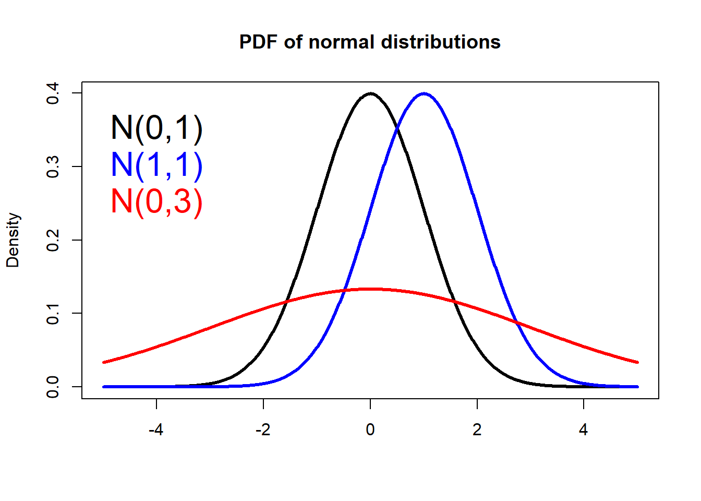
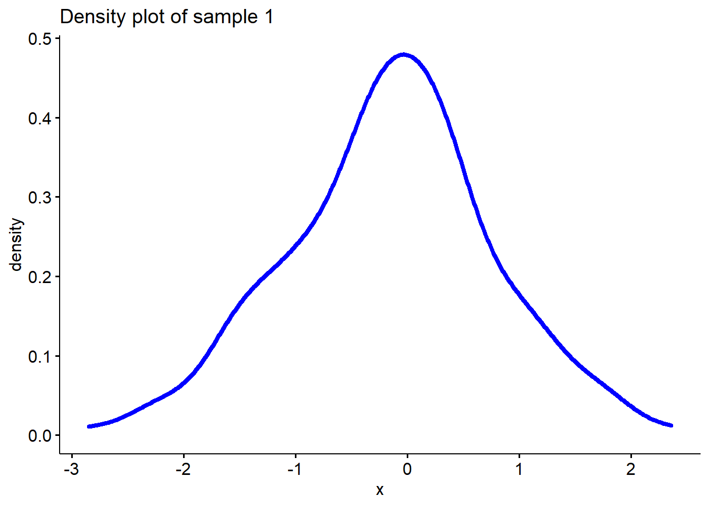
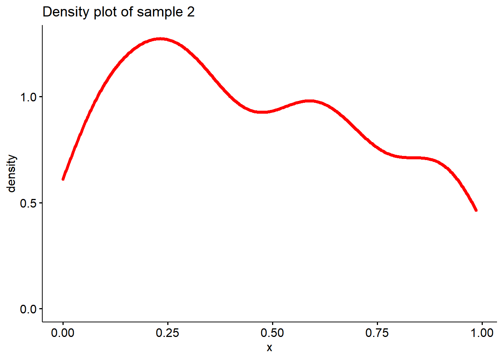
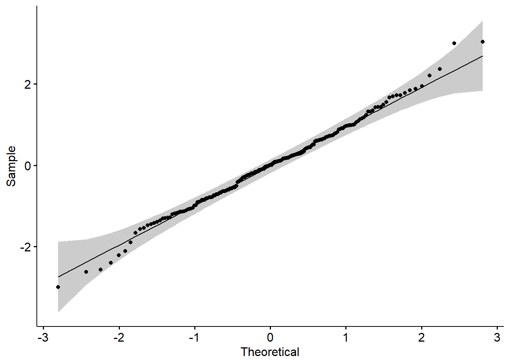
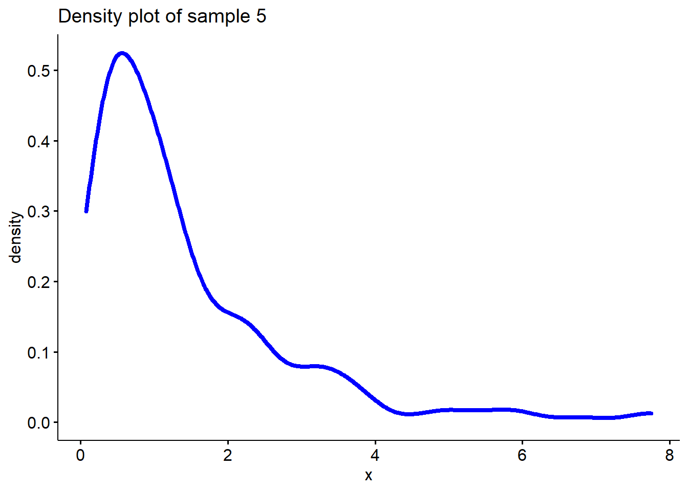
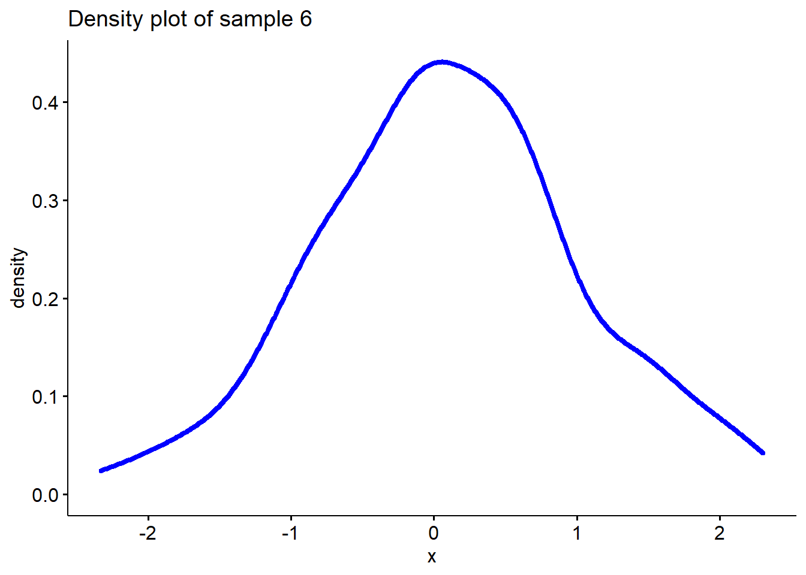
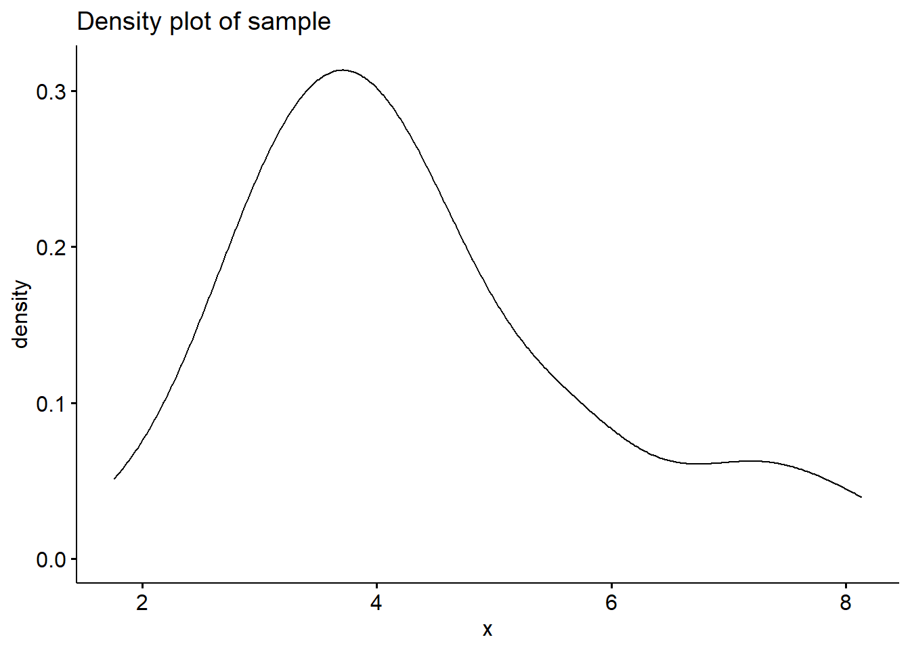
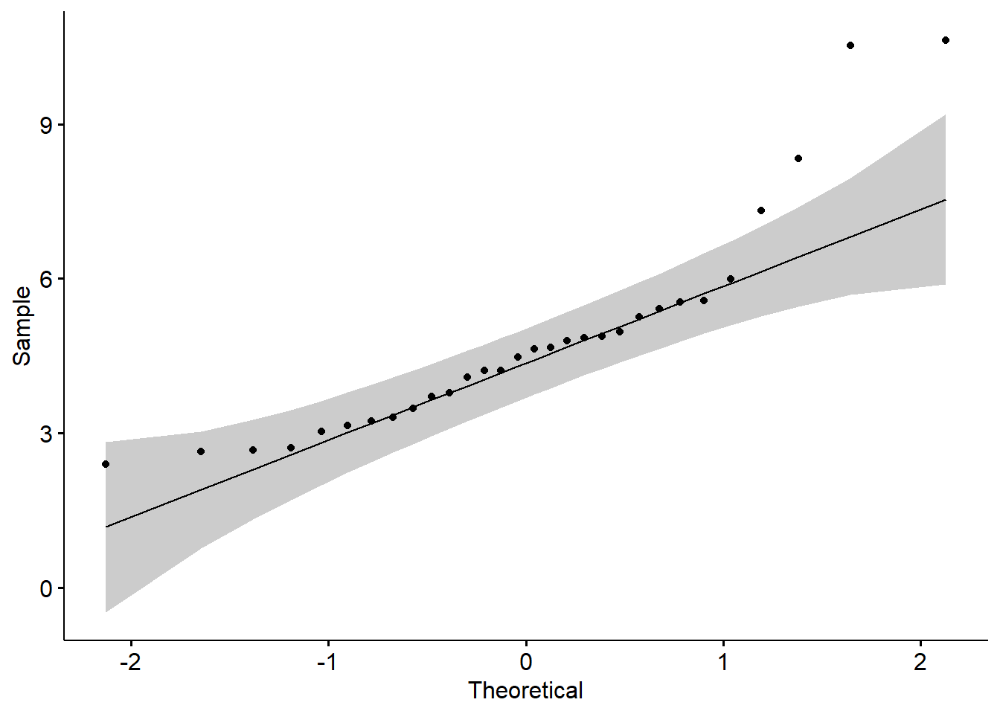
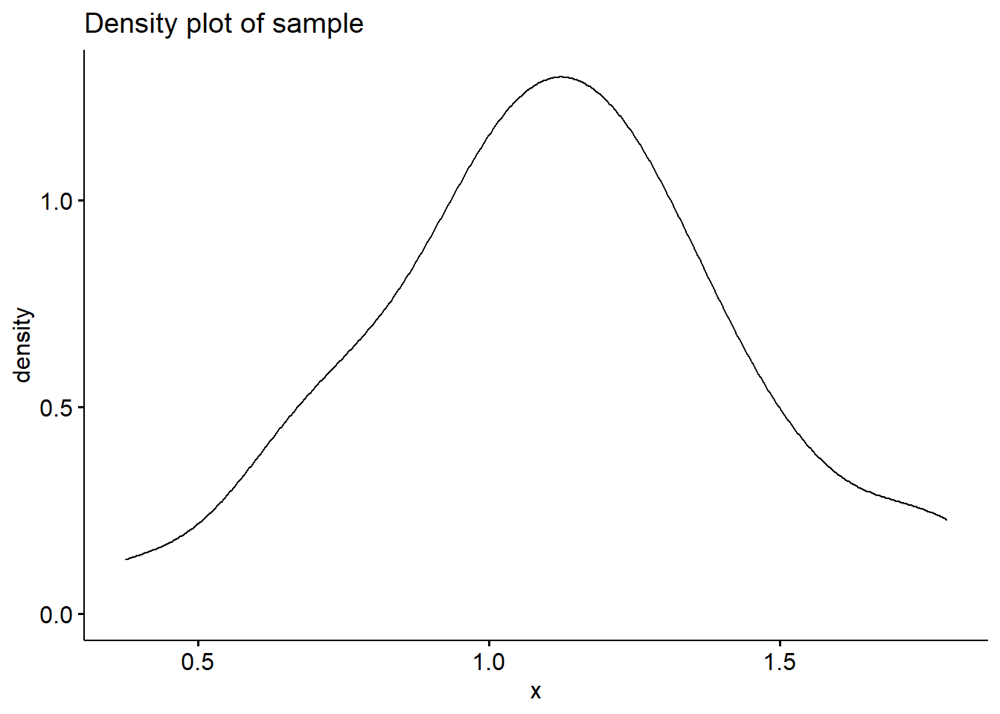
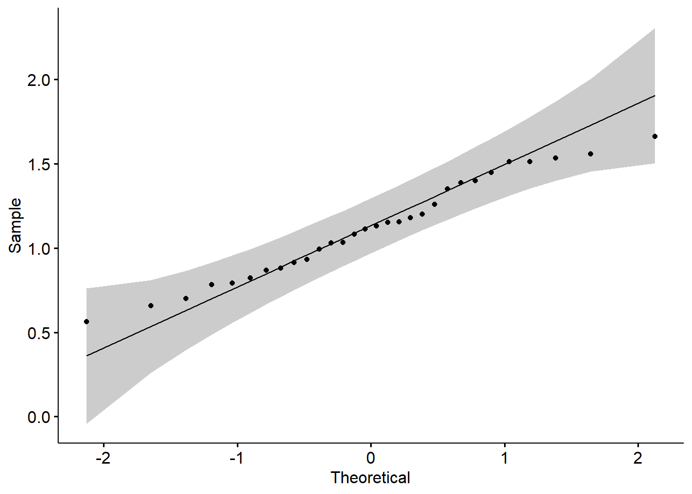

Section 06 Normal distribution
Prerequisites
Install the following packages:
ggpubrnortestgeoR
Load the libraries with R:
Section Example: Sleep duration of SUSTech students
This section starts with a poll. Suppose we want to know how many hours SUSTech undergraduates generally sleep every day. Let’s further assume that ESE335 students are representative of the whole population (SUSTech undergraduates).
Now let’s count the number of students for each of the following intervals:
less than 5 hours
5-6 hours
6-7 hours
7-8 hours
8-9 hours
9-10 hours
more than 10 hours
We should be able to build a histogram, but think about what is the chance that the sleep duration is exactly 8.00 hours?
Probability Density Function (PDF)
In probability theory, a probability density function (PDF) \(f(x)\), or density of a continuous random variable, is a function that describes the relative likelihood (probability or chance) for this random variable \(X\) to take on a given value \(x\).
Probability density function is defined by following formula: \[ P(a \le X \le b) = \int_a^b f(x) ~ dx \]
Normal distribution
Why is it so “normal”?
The normal distribution is the most important probability distribution in statistics because it fits many natural phenomena. For example, heights, blood pressure, measurement error, and IQ scores follow the normal distribution. The reason why normal distribution is so “normal” in nature can be traced to the Central Limit Theory, which states that various independent factors influence a particular trait. When all these independent factors contribute to a phenomenon, their normalized sum tends to result in a normal distribution.
The normal distribution is also known as Gaussian distribution or bell curve, which encompasses two basic terms - mean and standard deviation. It is a symmetrical arrangement of a data set in which most values cluster in the mean and the rest taper off symmetrically towards either extreme.
PDF of a normal distribution
An Normal random variable \(X\) is defined as follows: \[X \sim N(\mu, \sigma^2) \] where \(\mu\) is the mean and \(\sigma^2\) is the variance, both refer to features of the population. And the PDF of a normal distribution is written as:
\[f(x)=\frac{1} {\sigma \sqrt{2 \pi}} e^{-(x-\mu)^2/2\sigma^2}\] In R, the dnorm() returns the probability density of a normal distribution:
# Make a vector from -5 to 5, with a step of 0.01
x <- seq(-5.0, 5.0, by=0.01)
# Compute the density for each element in x
density1 <- dnorm(x, 0, 1)
# Plot Density
plot(x, density1, col="black", xlab="", ylab="Density",
type="l", lwd=3, cex=2,
xlim=c(-5.0, 5.0),
main="PDF of normal distributions")
# Compute and plot the density from another normal
density2 <- dnorm(x, 1, 1)
lines(x, density2, col="blue", xlab="", ylab="Density",
type="l", lwd=3, cex=2)
# Compute and plot the density from another normal
density3 <- dnorm(x, 0, 3)
lines(x, density3, col="red", xlab="", ylab="Density",
type="l", lwd=3, cex=2)
# Add legends
text(-4, 0.35, "N(0,1)", col="black", cex=2)
text(-4, 0.30, "N(1,1)", col="blue", cex=2)
text(-4, 0.25, "N(0,3)", col="red", cex=2)
Normality Test
If the data set follows the normal distribution, it is easier to predict with high accuracy. If we would like to use parametric statistical tests (e.g., correlation, regression, t-test, ANOVA, Pearson’s correlation coefficient), the validity of these tests depends on the distribution. Parametric tests are only valid if the distribution is normal, otherwise, we violate the underlying assumption of normality. Normality and other assumptions should take seriously to have reliable and interpretable research and conclusions.
If we found that the distribution of our data is not normal, we have to choose a non-parametric statistical test (e.g. Mann-Whitney test, Spearman’s correlation coefficient) or so-called distribution-free tests.
There are several possibilities to check normality, including visual inspections, such as normal plots/histograms, Q-Q (quartile-quartile) plot, and statistical tests, such as Shapiro-Wilk test and Lilliefors (Kolmogorov–Smirnov) test.
Density plot
The simplest, of course, is to visually check whether the distribution is bell-shaped or not.
Let’s generate two samples, one is from \(N(0,1)\), the other one is from a uniform distribution. Then plot the density functions of the two samples.
# Sample 1 is from a normal distribution
sample1 <- rnorm(200, 0, 1)
# Sample 2 is from a uniform distribution
sample2 <- runif(200, 0, 1)
# Plot density function of sample 1
ggdensity(sample1, main = "Density plot of sample 1",
xlab = "x", color ="blue", lwd=1.5)
# Plot density function of sample 2
ggdensity(sample2, main = "Density plot of sample 2",
xlab = "x", color ="red", lwd=1.5)
Well, it seems sample 1 is more likely to be from a normal distribution than sample 2.
Q-Q plot
A QQ (or quantile-quantile plot) plot is a scatter plot that compares two sets of data. A common use of QQ plots is checking the normality of data. However, they can be used to compare real-world data to any theoretical data set to test the validity of the theory. They can actually be used for comparing any two data sets to check for a relationship.
It works by plotting the data from each data set on a different axis. If the distribution of the data is the same, the result will be a straight line.


Here the gray area shows the acceptable deviation from the normal line.
Shapiro-Wilk test
The above visual observations are just sanity checks. To have a more reliable result, one needs to do a statistical test of the normality. Here the sample distribution is compared with the normal distribution. The null hypothesis of these tests is the sample distribution is normal. If we fail to reject the null hypothesis, the sample is normal. If the test is significant/we reject the null hypothesis, the sample distribution is non-normal.
The Shapiro-Wilk method is widely used to check normality of a small sample (size less than 30). In R, the test is done with shapiro.test().
# Sample 3 is from a normal distribution
sample3 <- sample1[1:25]
# Sample 4 is from a uniform distribution
sample4 <- sample2[1:25]
# Shapiro-Wilk test of sample 3
shapiro.test(sample3)##
## Shapiro-Wilk normality test
##
## data: sample3
## W = 0.98558, p-value = 0.9692From the output, the p-value > 0.05 shows that we fail to reject the null hypothesis, which means the distribution of our data is not significantly different from the normal distribution. In other words, the distribution of our data is normal.
##
## Shapiro-Wilk normality test
##
## data: sample4
## W = 0.90186, p-value = 0.02015Lilliefors test
The Kolmogorov-Smirnov (K-S) test is used to test whether or not or not a sample comes from a certain distribution. The Lilliefors test is an improvement on the K-S test — correcting the K-S for small values at the tails of probability distributions — and is therefore sometimes called the K-S D test. The Lilliefors test can be conducted with the lillie.test() function from the nortest package:
##
## Lilliefors (Kolmogorov-Smirnov) normality test
##
## data: sample1
## D = 0.040189, p-value = 0.5992##
## Lilliefors (Kolmogorov-Smirnov) normality test
##
## data: sample2
## D = 0.080839, p-value = 0.00288Log-Normal Distribution
The log-normal distribution is found to the basic type of distribution of many geological/environmental variables. When the logarithms of values form a normal distribution, the original (antilog) values are log-normally distributed. It is a skewed distribution with many small values and fewer large values. Therefore the mean is usually greater than the mode.
In geology, many processes lead to a log-normal, so often that it has been said the log-normal is the normal of geology.
# Sample 5 is from a log-normal distribution
sample5 <- exp(rnorm(200, 0, 1))
# Plot density function of sample 1
ggdensity(sample5, main = "Density plot of sample 5",
xlab = "x", color ="blue", lwd=1.5)
Normal transformation
When the sample follows a log-normal distribution, it’s straightforward to make a logarithmic transformation. Such as:
\[ x_{i}^{'}= ln(x_{i})\]
# Sample 5 is from a log-normal distribution
sample5 <- exp(rnorm(200, 0, 1))
sample6 <- log(sample5)
# Plot density function of sample 1
ggdensity(sample6, main = "Density plot of sample 6",
xlab = "x", color ="blue", lwd=1.5)
The Box-Cox transformation is commonly used to transfer a non-normal dependent variables into a normal shape. The basic idea behind this method is to find some value for \(\lambda\) such that the transformed data is as close to normally distributed as possible, using the following formula:
\[x_{i}^{'}= ln(x_{i}), \lambda = 0\] \[x_{i}^{'}= \frac{x_{i}^{\lambda}-1}{\lambda}, \lambda \ne 0\]
In R, you can find \(\lambda\) using the boxcoxfit() function from the geoR package. For example:
# Generate a sample
y <- exp(runif(30,0,1)+runif(30,0,1)+runif(30,0,1))
# Plot the density
ggdensity(y,main = "Density plot of sample", xlab = "x")

##
## Lilliefors (Kolmogorov-Smirnov) normality test
##
## data: y
## D = 0.12576, p-value = 0.2623# BOX-COX transformation, get lambda
lambda <- boxcoxfit(y)$lambda
# BOX-COX transformation
y_new <- (y^lambda-1)/lambda
# Plot the density
ggdensity(y_new,main = "Density plot of sample", xlab = "x")

##
## Lilliefors (Kolmogorov-Smirnov) normality test
##
## data: y_new
## D = 0.12779, p-value = 0.241In-class exercises
Exercise #1
Is the following sample from a normal distribution?
0.6, -1.0, -0.5, 0.9, -0.4, 0.9, 0.6, -0.2, 0.1, 0.7, 0.4, -0.5, 1.2, 0.1, 0.6, -1.3, 0.9, 1.1, 0.2, 0.1.
1.1 Make a density plot
1.2 Make a Q-Q plot
1.3 Test the normality with a test
Exercise #2
The following sample is rainfall (acre-feet) in a location:
1202.6, 830.1, 372.4, 345.5, 321.2, 244.3, 163.0, 147.8, 95.0, 87.0
81.2, 68.5, 47.3, 41.1, 36.6, 29.0, 28.6, 26.3, 26.0, 24.4
21.4, 17.3, 11.5, 4.9, 4.9, 1.0
Is the sample from a normal distribution? If not, can you make a normal transformation for the sample?
Exercise #3
Can you make up a sample that is NOT from a normal distribution? Then
3.1 Make a density plot of the sample
3.2 Make a Q-Q plot
3.3 Test the normality with a test
Now conduct the BOX-COX transformation for the sample, and for the new sample:
3.4 Make a density plot
3.5 Make a Q-Q plot
3.6 Test the normality